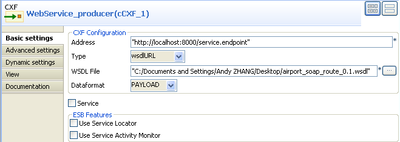
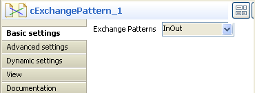
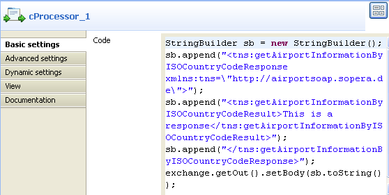
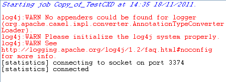

|
Component Family |
Processor | |
|
Function |
cExchangePattern can be configured to indicate the message exchange mode. | |
|
Purpose |
cExchangePattern allows you to set the message exchange mode. | |
|
Basic settings |
Exchange Patterns |
Select the message exchange mode from InOnly or InOptionalOut, InOut, OutIn, OutOptionalIn, RobustInOnly, RobustOutOnly. |
|
Usage |
As a middle component in a Route, cExchangePattern allows you to set the message exchange mode. | |
|
Limitation |
| |
In this scenario, a cExchangePattern component is used to enable the request/reply exchange pattern in the route, so that the client can get a reply from the server.
To send requests to the server side, a soapUI is needed and its configuration will be briefed in the following contents.
To build the Route, do the following.
Drag and drop the components from the Palette onto the workspace: cCXF, cExchangePattern and cProcessor.
Link cCXF to cExchangePattern using a Row > Route connection.
Link cExchangePattern to cProcessor using a Row > Route connection.

Double-click cCXF to open its Basic settings view in the Component tab.
 In the Address field, leave the default setting unchanged.
In the Type list, select wsdlURL.
In the WSDL File field, enter the URL of the wsdl file. You can also click the three-dot button to browse for it.
In the Dataformat list, select PAYLOAD.
Double-click cExchangePattern to open its Basic settings view in the Component tab.
In the Exchange Patterns list, select InOut to enable the request/reply message exchange mode.
Double-click cProcessor to open its Basic settings view in the Component tab.
In the Code box, enter the code below.
StringBuilder sb = new StringBuilder(); sb.append("<tns:getAirportInformationByISOCountryCodeResponse xmlns:tns=\"http://airportsoap.sopera.de\">"); sb.append("<tns:getAirportInformationByISOCountryCodeResult>This is a response</tns:getAirportInformationByISOCountryCodeResult>"); sb.append("</tns:getAirportInformationByISOCountryCodeResponse>"); exchange.getOut().setBody(sb.toString());As shown above, a string is built here and is used as a reply message of the route. It is in line with the message definition of the above wsdl file.
Press Ctrl+S to save your Route.
Click the Code tab at the bottom of the design workspace to check the generated code.

As shown above, the route has its message exchange pattern set as
InOutusing the method.setExchangePattern(org.apache.camel.ExchangePattern.InOut). In the meantime, a string is created usingStringBuilder sb = new StringBuilder()atcProcessor_1and is used as the reply message via the methodexchange.getOut().setBody( sb.toString()).Press F6 to execute the Route.
The server Route gets started.

In the soapUI, create a Test project and edit a request, as illustrated below:

Note that the wsdl file must be same as that configured for cCXF, so that the request can be in line with the definition of the web service.
Send the request to the server Route and you can get the reply, as illustrated below: